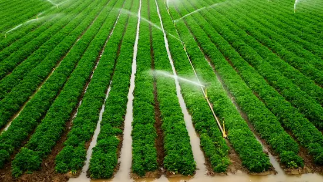

Optimizing National Agricultural Output
Welcome to the digital gateway for localized precision agriculture. By integrating strategic crop rotation templates with modern irrigation insights, our platform provides farmers with the field-tested methodologies needed to increase production, stabilize soil ecosystems, and navigate regional climate patterns effectively.
